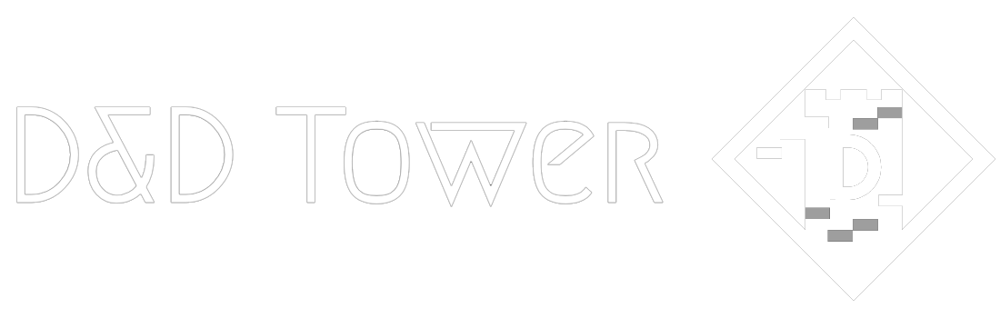

Набор удобных инструментов мастера и игроков для игры в D&D
Наш сервис позволит вам хранить листы всех ваших персонажей в одном месте и при необходимости быстро переключиться на другого персонажа.
Интерфейс сайта автоматически подстраивается под устройство, которым вы пользуетесь, что обеспечивает удобный опыт использования как с мобильных устройств, так и с компьютера.
Поскольку данные хранятся в облаке, вы можете получить к ним доступ в любое время и с любого устройства для просмотра или редактирования ваших данных.
Составьте список заклинаний или умений для своего персонажа, чтобы всегда иметь возможность получить мгновенный доступ к этой информации.
Удобные инструменты мастера помогут вам в составлении приключений и отслеживанни информации о неигровых персонажах во время сражения.